Skriptet legger én verktøylinje på geocaching.com-kartene og gjør dem til et fleksibelt kartverktøy:
Nettstedets egne knapper for zoom, posisjon og kart samles i den samme verktøylinjen, så du slipper doble knapper.
geocaching-custom-tiles.user.js i nettleseren, eller lag et nytt skript i skriptbehandleren og lim inn innholdet i filen. Lagre.| Side | Hva du får |
|---|---|
www.geocaching.com/map/… | Alt: verktøylinje, kartlag, søk og verktøy. |
www.geocaching.com/play/map… | Alt (det nye søkekartet). |
www.geocaching.com/geocache/… …/seek/cache_details.aspx… | Bare bakgrunnskartet og overleggene du har valgt, på det lille kartet – ingen knapper. |
Skriptet trenger ingen spesielle tillatelser (@grant none). Alle innstillinger lagres i nettleseren for geocaching.com og deles derfor mellom kartsidene og cachesidene.
| Knapp | Hva den gjør |
|---|---|
| Kartlag – åpner kartlagpanelet ved siden av verktøylinjen. Klikk igjen for å lukke. | |
| Zoom inn / ut. Gråtonet når kartet ikke kan zoome lenger. | |
| Forrige utsnitt – tilbake ett steg om gangen dit du var, opptil 10 steg (hvert zoomsteg og hver flytting teller). Gråtonet når det ikke er noe å gå tilbake til. | |
| Finn fram | |
| Finn et sted – stedsnavn, adresser, koordinater eller GC-koder. Hurtigtast /. | |
| Gå hjem – til hjemadressen du har lagret. Første klikk spør etter adressen; høyreklikk på knappen for å endre eller fjerne den. | |
| Vis min posisjon, med nøyaktighetssirkel. | |
| Fullskjerm. Klikk igjen for å avslutte. | |
| Verktøy | |
| Mål avstand og retning. Klikk punkter på kartet; klikk på en geocache festes til koordinatene. | |
| Rute – sett sammen en rute av geocacher og merkenåler og last den ned som GPX (avsnitt 11). Grønn kant mens vinduet er åpent. | |
| Geocacher på kartet – en liste som følger kartet (bare /map, avsnitt 11). Grønn kant mens lista er åpen. | |
| Hva som vises | |
| Vis på kartet – 161 m-sirkler, merker ved løste cacher, favorittpoeng, D/T, FTF og typeikoner (se under). Grønn kant mens panelet er åpent. | |
| Skjul alle geocacher – nettstedets cacheikoner, skriptets egne merker og 161 m-sirklene forsvinner; nåler, enkeltsirkler og målinger blir værende. Klikk igjen () for å vise dem. Huskes ikke: cachene er tilbake etter ny innlasting. | |
| Resten | |
| Fjern alle tegninger – merker, målinger, projiseringer og enkeltsirkler. | |
| Innstillinger – utseende, språk og hvordan skriptet oppfører seg. | |
| Hjelp – en oversikt på én side, med lenke til denne veiledningen. | |
Nettstedets knapper som verktøylinjen ikke erstatter, flyttes til en egen del nederst i verktøylinjen og virker som før.
Verktøylinjen finner selv en ledig plass: den står ved høyre kant, flytter seg ned under knapper som «Create Route» / «Browse Map», og til siden hvis noe annet er i veien. Koordinatvisningen står nederst til høyre.
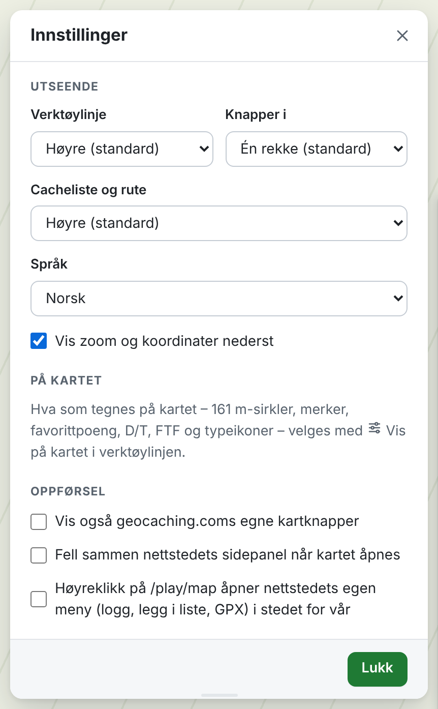
Verktøylinjen kan stå på høyre (standard) eller venstre side av kartet, eller øverst eller nederst – i én eller to rekker. Den sentreres langs kanten (loddrett på sidene, vannrett øverst og nederst) i den synlige delen av kartet, og flytter seg til nærmeste ledige plass hvis en annen knapp er i veien. I fullskjerm står den helt ute ved skjermkanten. Når én rekke ikke får plass – i et smalt vindu, eller ved siden av nettstedets åpne sidepanel – bruker verktøylinjen to rekker av seg selv, og går tilbake til én når det er plass (Innstillinger viser da To rekker (automatisk)). Velg i Innstillinger, eller dra verktøylinjen etter håndtaket (prikkene i toppen eller venstre ende): et stiplet blått felt viser kanten den legger seg mot. Valget huskes – for /map og /play/map hver for seg. Øverst og nederst står verktøylinjen alltid sentrert; er en av nettstedets knapper i veien (som Search this area), flytter den seg rett under (eller over) den.
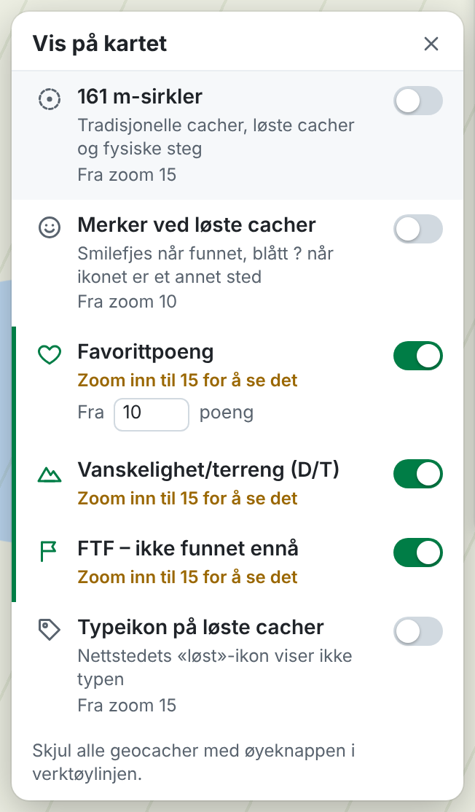
Vis på kartet åpner et lite panel med en bryter for alt skriptet tegner oppå cachene:
Hver bryter sier hvilket zoomnivå den vises fra; er en på mens du har zoomet for langt ut, står det Zoom inn til 15 for å se det. Dra panelet etter tittellinjen; Esc eller et klikk utenfor lukker det.
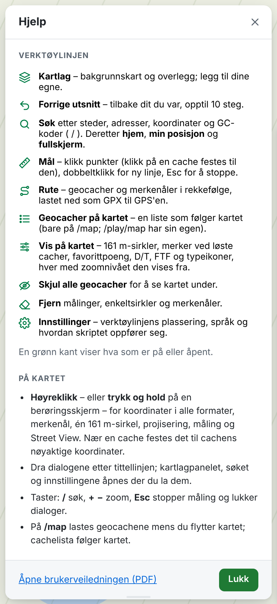
Hjelp gir en oversikt på én side over knappene, høyreklikkmenyen, tastene og forskjellene mellom /map og /play/map, med lenke til denne veiledningen på ditt språk.
På en berøringsskjerm (iPad, mobil): trykk og hold på kartet et halvt sekund for å åpne den samme menyen som ved høyreklikk – koordinater, merkenål, enkeltsirkel, projisering, måling og Street View, festet til en cache i nærheten.
Taster: / søk, + − zoom, Esc stopper måling og lukker dialoger og paneler.
Når du går fra det ene kartet til det andre (innen 5 minutter), åpnes kartet du kommer til med samme utsnitt – midtpunkt og zoom (halve zoomnivåer fra /play/map rundes av på /map) – og nettstedets sidepanel sammenfelt eller åpent slik det var på kartet du kom fra. Kartet er usynlig et øyeblikk til det står på utsnittet, så du ser aldri nettstedets eget første utsnitt. Laster du inn samme kart på nytt, eller kommer senere, virker alt som før.
/play/map viser bare cachene nettstedet har søkt etter. Fra zoom 15 trykker skriptet Søk i dette området for deg når du har flyttet kartet og det har stått stille et øyeblikk – sparsomt, siden nettstedet bare tillater noen få søk i minuttet: bare når minst en tredjedel av utsnittet er nytt, og høyst ett trykk hvert 8. sekund. Kommer et søk tilbake uten cacheikoner (nettstedet har fått for mange søk), venter skriptet 30 sekunder – lenger om det skjer igjen, opptil 10 minutter – og trykker så én gang til, så ikonene kommer tilbake av seg selv. Under zoom 15 trykker du på knappen selv.
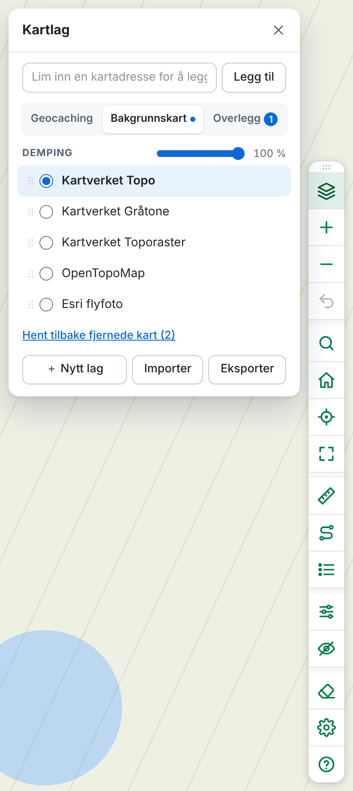
Klikk for å åpne panelet. Kartene er delt i tre faner:
En blå prikk viser hvilken fane bakgrunnskartet som er i bruk ligger i, og Overlegg-fanen viser hvor mange overlegg som er slått på. Panelet åpnes på fanen du brukte sist.
Velg ett bakgrunnskart, i en av de to bakgrunnsfanene.
Glidebryteren Demping (i begge bakgrunnsfanene) demper det valgte bakgrunnskartet: dra den mot venstre, så blekes kartet mot hvitt, med høyst 50 %. Verdien vises i prosent. Den følger med når du bytter kart, og virker også på geocaching.coms egne kart. Bakgrunnskartet ditt tegnes alltid helt dekkende, så geocaching.com-kartet skinner aldri gjennom. Cacheikoner og overlegg dempes aldri.
Kryss av for så mange overlegg du vil. Glidebryteren Synlighet styrer synligheten for alle valgte overlegg (50–100 %); et lag med egen standardverdi beholder den i forhold til glidebryteren (terrengskyggen holder seg på 60 % av verdien). Overlegg tegnes alltid over bakgrunnskartet og under cachene – og seg imellom i listens rekkefølge: det øverste tegnes øverst.
Hver rad har et håndtak helt til venstre. Dra i det for å flytte kartet opp eller ned, eller klikk på håndtaket og bruk ↑ ↓. Rekkefølgen huskes for hver fane.
 på et innebygd kart – eller på et av geocaching.coms egne kart – fjerner det fra listen. Et av geocaching.coms overlegg som er slått på, slås av. Hent tilbake fjernede kart (n) henter alle tilbake.
på et innebygd kart – eller på et av geocaching.coms egne kart – fjerner det fra listen. Et av geocaching.coms overlegg som er slått på, slås av. Hent tilbake fjernede kart (n) henter alle tilbake.Valgt kart og valgte overlegg er markert med blått. Knappene vises når du holder musen over raden. Før et kart slettes eller fjernes, får du spørsmål i en liten dialog med rød knapp for å bekrefte.
Valgene huskes og brukes også på cachesidene.
| Navn | Type | Kilde og merknader |
|---|---|---|
| Kartverket Topo | Bakgrunn | Kartverkets topografiske kart (WMTS-cache, Web Mercator). |
| Kartverket Gråtone | Bakgrunn | Topografisk kart i gråtoner – cachene synes godt. |
| Kartverket Toporaster | Bakgrunn | Klassisk topografisk rasterkart. |
| OpenTopoMap | Bakgrunn | Topografisk kart for hele verden, basert på OpenStreetMap og SRTM. |
| Esri flyfoto | Bakgrunn | Fly- og satellittfoto for hele verden (Esri World Imagery). |
| OpenStreetMap | Bakgrunn | Standard OSM-kart. |
| Esri topografisk | Bakgrunn | Topografisk kart for hele verden (Esri World Topo). |
| Turruter (Kartverket) | Overlegg · WMS | Offisielle fot-, ski-, sykkel- og andre ruter (laget Ruter i tjenesten Tur- og friluftsruter). |
| Eiendomsgrenser (Kartverket) | Overlegg · WMS | Eiendomsgrenser og gnr/bnr fra den åpne matrikkeltjenesten (CC BY 4.0). Vises fra zoom 14. |
| Terrengskygge (Esri) | Overlegg | Terrengrelieff, blandet inn i kartet (60 % som standard). |
Flyfoto fra Norge i bilder er ikke med: Kartverket legger ned den åpne flistjenesten, og tilgangen er forbeholdt partene i Norge digitalt. Bruk Esri flyfoto i stedet.
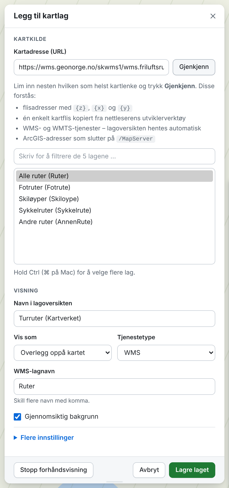
Bruk ＋ Nytt lag, eller lim inn en adresse i feltet øverst i panelet. Trykk Gjenkjenn, eller bare lim inn – redigeringsvinduet forstår:
{z}, {x}, {y}, og også {- y} (TMS), {s} (underdomener) og {q} (quadkey som hos Bing).…/12/1196/2164.png. Den gjøres om til en mal; rekkefølgen på x og y gjettes ut fra området du ser på.WMTSCapabilities.xml -adresse, en tjenesteadresse eller en mal med {TileMatrix}. Lag i et Web Mercator-flissett listes opp slik at du kan velge./MapServer (bufret, Web Mercator).Når adressen er gjenkjent, forhåndsvises laget på kartet med en teller for innlastede og feilede fliser. Velg Bakgrunnskart eller Overlegg oppå kartet, gi laget et navn og trykk Lagre laget.
Hvis en server ikke lar skriptet lese lagoversikten (på grunn av begrensninger mot andre nettsteder), viser redigeringsvinduet en lenke til oversikten. Åpne den, kopier alt og lim det inn i vinduet.
Eksporter viser dine egne kartlag som tekst (JSON) som du kan kopiere eller lagre som fil. Importer tar imot slik tekst eller en .json -fil – for eksempel for å flytte kartlagene til en annen datamaskin eller dele dem med andre. Kartlag som allerede finnes, hoppes over. Limer du inn én kartadresse i Importer, åpnes den i redigeringsvinduet.
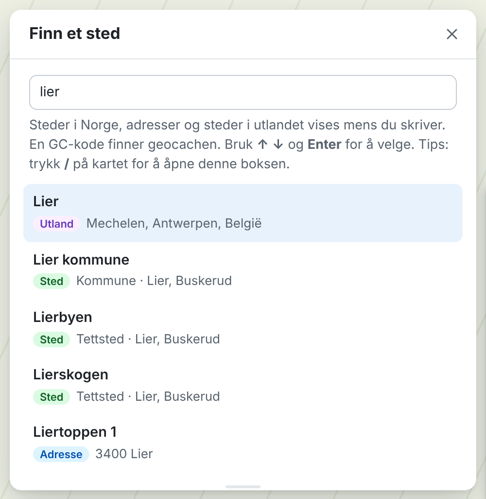
Klikk eller trykk /.
32V 597980 6643119) gjenkjennes og vises i andre formater øverst i listen.GC1AAA) finner geocachen: de publiserte koordinatene, og dine løste koordinater først når du har dem. Ukjente cacher slås opp på cachesiden.Bruk ↑ ↓ og Enter for å velge. Stedet du velger, får en merkenål med navnet.
Knappen tar deg til hjemadressen din. Første gang åpner den Angi hjemadresse – den samme søkeboksen: skriv adressen og velg den. Etter det går et klikk rett hjem og merker stedet med en pin som heter Hjemme – selve adressen vises aldri på kartet. For å endre eller fjerne adressen høyreklikker du på knappen, eller høyreklikker hvor som helst på kartet og velger Sett som hjem. Adressen lagres bare i nettleseren din. I Finn et sted kommer hjemadressen din først når du skriver «hjem» eller «home» (fra to bokstaver) eller en del av navnet. I rutevinduet står den som en pin som heter Hjemme, blant de andre etter avstand, og finnes på samme måte.
Koordinatene under musepekeren vises nederst til høyre på /map og nederst til venstre på /play/map (ved siden av sidepanelet, og følger det når det åpnes og lukkes), med zoomnivået over. Klikk på koordinatene for å bla gjennom formatene; valget huskes. Skriv et tall i zoomfeltet og trykk Enter (eller bruk pilene i feltet) for å zoome; tall utenfor kartets område justeres til nærmeste nivå. ✕ i visningen skjuler den; vis den igjen i Innstillinger.
i visningen slår på et trådkors midt på kartet (av som standard). Koordinatene er da punktet under krysset: flytt kartet for å lese dem av – nyttig på en berøringsskjerm. Med trådkorset på kopierer koordinatene under krysset til utklippstavlen, i formatet som vises. Knappen åpner høyreklikkmenyen ved trådkorset – sett et punkt nøyaktig med trådkorset og åpne menyen, for eksempel for å sette en nål akkurat der. Punktet regnes fra der krysset faktisk står på skjermen. Lukker du visningen, forsvinner også krysset; det kommer tilbake når visningen vises igjen.
| Format | Eksempel (Oslo) | Merknad |
|---|---|---|
| DMM | N 59° 54.834 E 010° 45.132 | Standard i geocaching. |
| DD | 59.913900, 10.752200 | Desimalgrader. |
| DMS | N 59° 54′ 50.0″ E 10° 45′ 07.9″ | Grader, minutter, sekunder. |
| UTM | 32V 597980 6643119 | Sonen velges automatisk. |
Alle koordinater er WGS84 (det samme som EUREF89 i kartsammenheng). UTM regnes med Krüger-rekkene til 6. orden (samme metode som PROJ) og er nøyaktig til omtrent en millimeter, også langt utenfor sonen. Langt vest for en sone kan østkoordinaten bli negativ – det er riktig.
Høyreklikk hvor som helst på kartet for en boble med posisjonen på én linje. Den åpnes alltid i DMM; klikk på linjen for å bytte til DD, DMS, og UTM (lokal sone). Knappen kopierer koordinatene i formatet som vises. Boblen har dessuten:
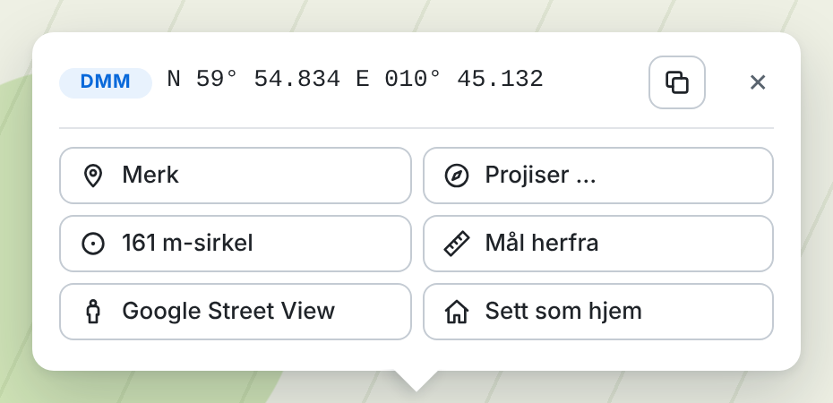
 161 m-sirkel – én sirkel her (eller Fjern sirkelen når du klikker inne i en).
161 m-sirkel – én sirkel her (eller Fjern sirkelen når du klikker inne i en).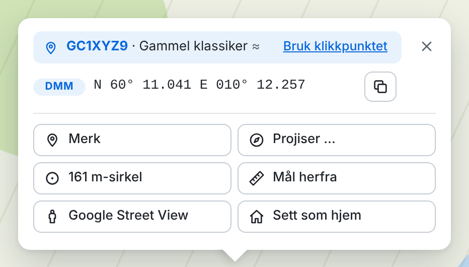
Høyreklikker du på en geocache, eller noen få piksler fra den (omtrent størrelsen på ikonet), festes boblen til cachen. En blå linje øverst viser cachens GC-kode, navn og favorittpoeng (♥ 42), og koordinatene og alle verktøyene i boblen – merkenål, projisering, måling og 161 m-sirkel – bruker cachens posisjon. Dine egne merkenåler virker på samme måte: høyreklikk på en, så festes boblen til den, med Fjern merkenålen i stedet for Merk.
/play/map tegnes cachene av nettstedets WebGL-kart; skriptet spør det hvilken cache som ligger under pekeren, og får GC-kode og nøyaktig posisjon. Høyreklikk der åpner vår boble, ikke nettstedets egen meny (med mindre det er valgt i Innstillinger). På begge kartene kommer de nøyaktige koordinatene fra geocaching.coms cachesøk så snart det har svart for området – de publiserte, eller dine korrigerte for løste cacher. Cacher som søket utelater, for eksempel dine egne, leses fra cachesiden i bakgrunnen fra zoom 15, eller første gang du høyreklikker på dem (boblen venter opptil 0,7 s). Til da beregnes posisjonen fra cacheikonet, vist med ≈ etter navnet.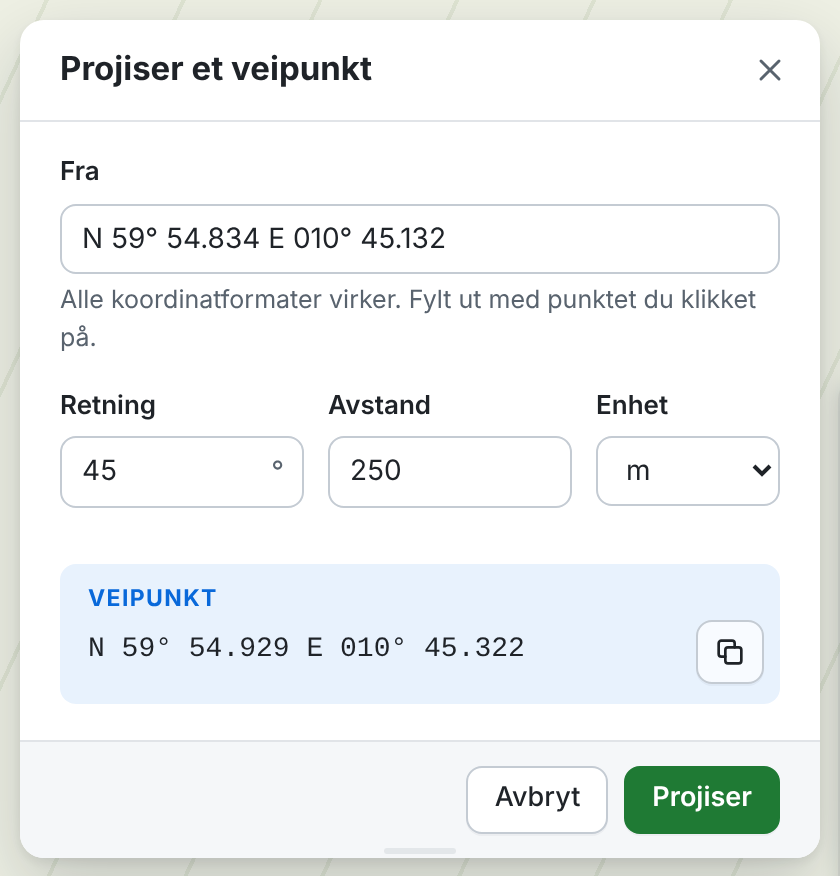
Måling : klikk punkter på kartet. Etiketten viser total avstand og lengde og retning for siste strekning. Dobbeltklikk for å starte en ny linje, Esc for å stoppe. Mens du måler, åpner klikk ikke cachenes informasjonsbobler.
Projisere et veipunkt: høyreklikk på startpunktet og velg Projiser …. Dialogen Projiser et veipunkt åpnes:
1,5.Avstander og projiseringer beregnes på en kuleformet jord – feilen er godt under en meter på geocachingavstander.
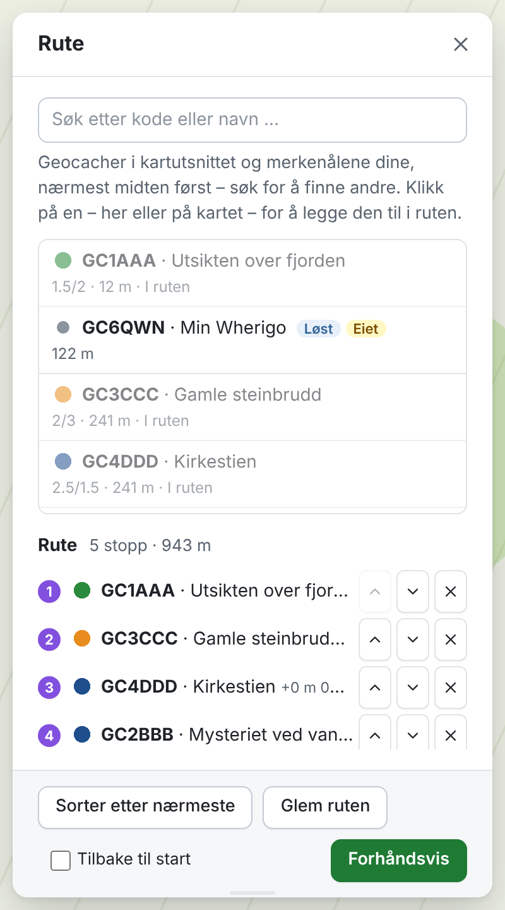
Planlegg cacheturen på kartet og ta den med deg på GPS'en. Klikk på Rute i verktøylinjen.
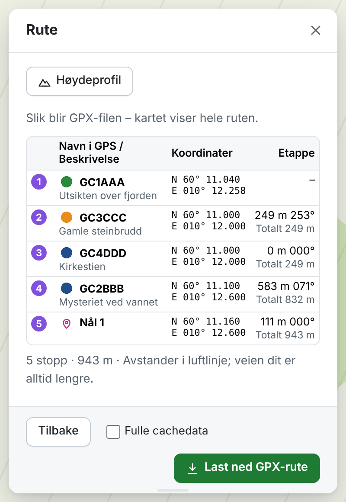
Forhåndsvis zoomer kartet til hele ruten – i den delen av kartet som vinduet, verktøylinjen, sidepanelet og andre knapper lar være fri – og viser nøyaktig hva GPX-filen inneholder: navnet hvert stopp får i GPS'en (GC-koden eller nålens navn), cachens navn som beskrivelse, koordinatene, etappen og samlet avstand. Klikk så Last ned GPX-rute.
route-2026-10-28-121305.gpx, så flere ruter samme dag ikke overskriver hverandre.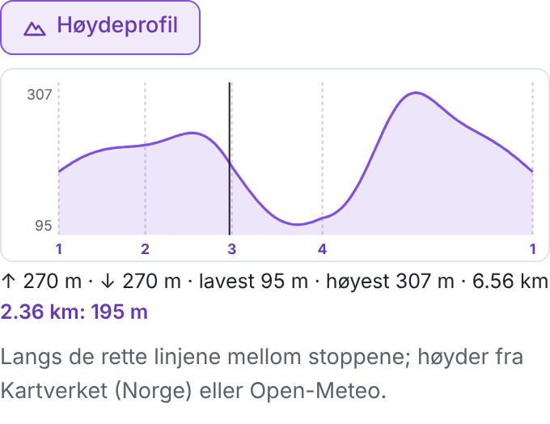
Vinduet kan – som alle dialogene – gjøres høyere eller lavere ved å dra i øvre eller nedre kant, og det tilpasser seg små skjermer.
I forhåndsvisningen
viser Høydeprofil høydene langs hele ruten, med stoppene merket med nummer (også returen til start ved en rundtur). Under står total stigning ↑ og fall ↓, laveste og
høyeste punkt, og lengden. Endringer under 2 m teller ikke, så små ujevnheter ikke legges sammen.
Uten at du åpner profilen, viser tabellen i forhåndsvisningen stigning og fall for hver etappe (f.eks. ↑ 43 m ↓ 12 m), og totalen for ruten under tabellen – så snart høydene er hentet.
Før musa langs profilen for å se avstand og høyde der – en lilla prikk viser samme sted på kartet.
Høydene i Norge kommer fra Kartverkets nasjonale høydemodell, ellers fra Open-Meteo (Copernicus, 90 m). Profilen følger de rette linjene mellom stoppene – eller, når en rute er beregnet, den beregnede ruten.
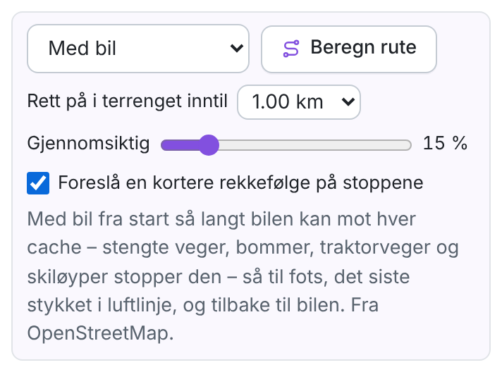
I forhåndsvisningen finner Beregn rute veien langs veger og stier – fra OpenStreetMap-data. Velg hvordan du ferdes:
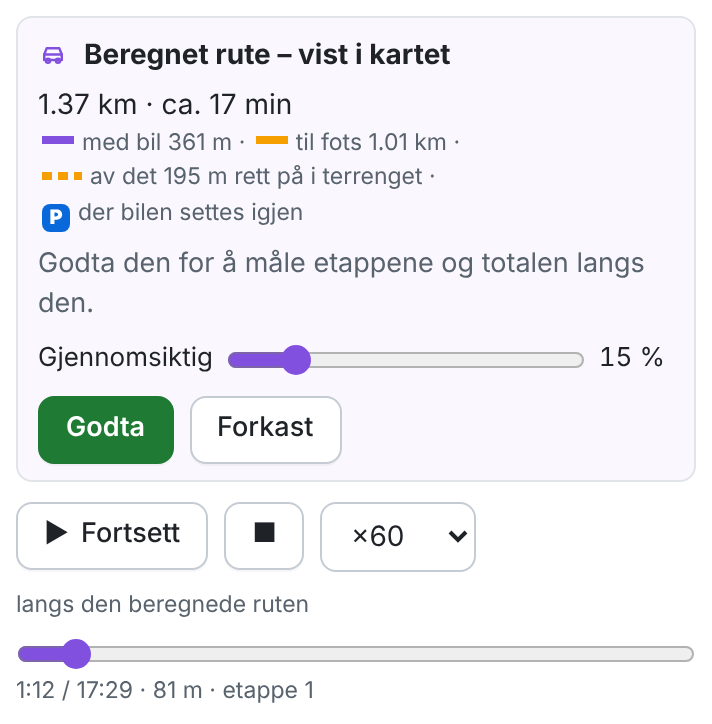
Rett på i terrenget inntil (aldri, 100 m … 2 km) bestemmer hvor langt du vil gå utenfor sti der stien går langt rundt; det brukes bare der det er raskere å gå rett på (utenfor sti ca. 1,8 km/t, på sti ca. 5 km/t). Punktet der du går inn på eller forlater en sti, velges etter tid, ikke bare det nærmeste. En rett strekning går aldri over vann og ikke gjennom bebyggelse eller dyrket mark – der går du gater og veger: skriptet leser fargene i kartet – den jevne lyseblå fargen på innsjøer og elver, bebyggelse, bygninger og dyrket mark – i Kartverkets topografiske kart (OpenStreetMap-kartet utenfor Norge), og går rundt i stedet. Kan et stopp bare nås over vann – en cache på en øy, for eksempel – blir det ingen rute.
Med Foreslå en kortere rekkefølge på stoppene på sjekker skriptet om en annen rekkefølge er raskere (første stopp ligger fast; det siste på en rundtur eller når det ikke er en cache). Er det det, viser det den nye rekkefølgen og tiden du sparer, og spør: Endre rekkefølgen eller Behold min rekkefølge.
Den beregnede ruten vises først bare i kartet – lilla med bil, grønn med sykkel, oransje til fots og oransje stiplet rett på i terrenget – med total lengde, tid og hvor mye som kjøres, sykles og gås; høydeprofilen følger den med en gang. Med Gjennomsiktig (0–90 %) skinner kartet gjennom ruten. Godta den (den merkes da ✓ Godtatt) for å måle etappene og totalen langs den – med tid per etappe og samlet tid i tabellen – og for å få den med i GPX-filen som spor – til enhver app som følger et GPX-spor, som OsmAnd eller Locus. Ruten og sporet får navn med dato og klokkeslett til sekundet, så hver av dem får sitt eget navn i GPS'en. Forkast gir luftlinjene tilbake; endrer du stoppene, forkastes den også.
Spill av ruten flytter deg langs ruten i kartet – bil, sykkel eller fotgjenger – i ×10 … ×600 sanntid, med pause, stopp og en glidebryter for å hoppe; kartet følger med, og det gjør også markøren i høydeprofilen.
Fart. Tidene på veg og sti kommer fra rutetjenesten (OSRM), og skriptet legger dem sammen:
Høydeforskjeller regnes ikke med, så sykling i kupert terreng blir nok litt for raskt beregnet. Når skriptet vurderer om bilen eller sykkelen skal flyttes, legger det til ett minutt for å parkere; det minuttet er ikke med i tiden som vises.
Stier mangler ofte. Ruteberegningen kjenner bare vegene og stiene i OpenStreetMap, og mange steder mangler de fleste stiene der – de prikkede stiene i de norske kartene kommer fra Kartverket og finnes ofte ikke i OpenStreetMap. Der de mangler, kan ruten få merkelige veivalg: lange omveier rundt via stiene den kjenner, eller lange strekninger rett på i terrenget. Øk da Rett på i terrenget inntil, eller sett en nål der du vil at ruten skal gå, og beregn på nytt.
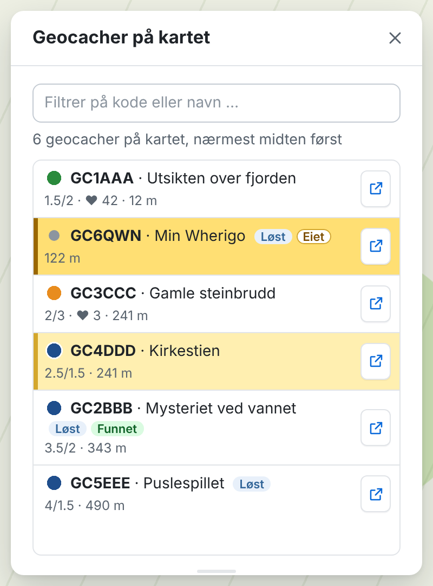
Veger og stier: OSRM (routing.openstreetmap.de); sjekken av vegtyper, bommer og skiløyper: Valhalla (valhalla1.openstreetmap.de) og OpenStreetMaps API – alle drevet av FOSSGIS / OpenStreetMap. Vann: kartflisene til Kartverket (cache.kartverket.no) eller OpenStreetMap (tile.openstreetmap.org).
På /map åpner Geocacher på kartet en liste over geocachene i kartutsnittet, nærmest midten først. (/play/map har sin egen liste.)
Cachelisten og rutevinduet står øverst til høyre (standard) eller øverst til venstre på kartet – velg i Innstillinger – så høye som kartet tillater. De holder seg unna nettstedets sidepanel og følger det når det åpnes og lukkes, og de to knappene bytter mellom dem.
Slå på 161 m-sirkler i Vis på kartet for å tegne en sirkel på 161 m (0,1 mile) – minsteavstanden mellom cacher i retningslinjene – rundt hvert sted der noe er utplassert:

Der ingen cacheikon viser stedet, tegnes et lite klikkbart merke midt i sirkelen. Merkene ved løste cacher slås av og på for seg i Vis på kartet; merker for steg og endelige plasseringer vises bare sammen med sirklene.
Hold musen over et merke for å se GC-kode, navn og Endelig plassering; klikk for å åpne cachesiden i en ny fane. Høyreklikk gir de nøyaktige koordinatene. Med favorittpoeng og D/T på får merket dem også.
Løste cacher huskes i nettleseren (60 dager), så merket vises også når de publiserte koordinatene ligger langt utenfor kartet – typisk for Wherigoer og mysterier. Skriptet lærer en cache første gang de publiserte koordinatene er i bildet fra zoom 15.
Løste cacher der ikonet allerede står på de korrigerte koordinatene – dine egne, og de du ikke har funnet ennå – beholder nettstedets ikon. Et usynlig merke over det gir den samme teksten (Endelig plassering) i stedet for nettstedets, og klikk åpner fortsatt nettstedets egen boble. Nettstedets «løst»-ikon sier ikke noe om cachetypen, så et lite typeikon – det samme som i cachelista – kan vises nede til høyre på det, og på våre merker ved løste cacher du har funnet (Innstillinger, av som standard).
Slik finnes cachetypene: kartet selv forteller bare GC-koden, så skriptet spør geocaching.coms eget cachesøk (det /play/map bruker) én gang for hvert område du ser på, ved hvert besøk. Svaret gir hver caches type, de nøyaktige publiserte koordinatene, om du har funnet den, og eventuelle koordinater du har korrigert. Krever søket innlogging, brukes nettstedets egen kortlivede tilgangsnøkkel – den lagres bare i minnet. Cachetypene huskes i nettleseren; løste koordinater hentes på nytt ved hvert besøk, siden du kan endre dem.
Slik finnes stegene: kartet viser ikke tilleggsveipunkter, så skriptet leser listen Additional Waypoints på cachesiden til hver multi, hvert mysterium, hver Wherigo og letterbox i bildet – to sider om gangen, fra zoom 15, og hvert resultat huskes i 14 dager. Steg der eieren har skjult koordinatene (???), kan ikke finnes. Et fysisk steg uten egne koordinater regnes som å ligge på de publiserte koordinatene; en endelig plassering uten koordinater vises ikke.
Slik finnes posisjonene: på /map tegnes cachene som bilder, men nettstedet laster også et skjult rutenett som forteller hvilken cache som dekker hver celle på 4 × 4 piksler. Til cachesøket har svart for et område, brukes midten av cellene til hver cache – nøyaktig til noen få meter. På /play/map er cachene vanlige kartmarkører, og de nøyaktige posisjonene brukes.
På cachesidene viser det lille kartet bakgrunnskartet og overleggene du har valgt, med samme demping og synlighet. Kartet beholder nettstedets eget utsnitt og zoomnivå. Ingenting annet legges til, og cachesiden endrer aldri valget du har lagret.
Grensesnittet finnes på norsk (bokmål) og engelsk. Som standard følger språket geocaching.com og nettleseren (norsk hvis en av dem er bokmål, nynorsk eller «no»). Bytt med Språk / Language i Innstillinger; endringen gjelder straks og huskes.
| Tast / handling | Virkning |
|---|---|
| / | Åpne søket (når du ikke skriver i et felt). |
| Esc | Lukk et vindu; stopp måling. |
| Dra i tittellinjen på en dialog | Flytt dialogen. |
| Enter i projiseringsdialogen Sett ut det projiserte punktet. | |
| ↑ ↓ Enter | Velg et søketreff. |
| + −, musehjul | Zoom (Leaflets egne taster). |
| Høyreklikk på kartet | Koordinater og punktverktøy. |
| Høyreklikk på 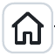 -knappen | Endre eller fjern hjemadressen. |
| Dobbeltklikk under måling | Start en ny målelinje. |
| Klikk på koordinatvisningen | Bytt koordinatformat. |
| Skriv i zoomfeltet, Enter | Zoom til det nivået (Esc angrer). |
| Klikk på et merke i en 161 m- sirkel | Åpne cachesiden i en ny fane. |
| Klikk på GC-koden i boblen | Åpne cachesiden i en ny fane. |
| Dra i i kartlagpanelet, eller ↑ ↓ på det | Endre rekkefølgen på kartene. |
| Problem | Hva du gjør |
|---|---|
| Et kartlag viser ingenting | Åpne det med og trykk Forhåndsvis på kartet: flistelleren viser om flisene lastes. Sjekk zoomområdet og, for WMS, lagnavnet. Mange tjenester dekker bare visse områder. |
| «Fant ingen cacheposisjoner på kartet ennå» | Nettstedet kan ha endret hvordan cachene tegnes. Kjør gcctReport() (se under) og send resultatet. |
| Høyreklikk fester seg ikke til en cache, eller viser ≈ | Høyreklikk på cachen og kjør så gcctSnapTest('GC…') med koden: den viser hva skriptet vet om cachen (publiserte og korrigerte koordinater, om søket returnerte den) og hvor boblen kan feste seg. |
| Ingen sirkler ved en multis fysiske steg | Kjør gcctStageTest('GC…') med cachens kode: den viser veipunktlisten skriptet fant på cachesiden og stegene det plukket ut. |
| Ingen 161 m-sirkler, eller «cachetypene er ikke kjent ennå» | Kjør gcctCacheDebug() i konsollen. Den viser om cachesøket svarte og hvilke felt svaret inneholdt – bare feltnavn og antall, ingen verdier eller personopplysninger. |
| Doble eller overlappende knapper | Kjør gcctReport(); listen siteButtons viser hvordan hver av nettstedets knapper ble tolket. |
| Vil ha nettstedets egne knapper tilbake | Kryss av for Vis også geocaching.coms egne kartknapper i Innstillinger. |
| Søket sier at en tjeneste ikke svarte | Et midlertidig problem hos Kartverket eller OpenStreetMap; prøv igjen litt senere. |
Åpne nettleserkonsollen (F12 → Konsoll) på kartsiden og skriv gcctReport(). En kort rapport skrives ut og kopieres til utklippstavlen. Den inneholder siden, Leaflet-versjonen, skriptversjonen, nettstedsknappene som ble funnet (med status), et sammendrag av kartets lag og kartrutene – ingen personopplysninger. Feil fra skriptet logges med prefikset [gcct].
Skriptet starter før siden og fanger opp Leaflet i det øyeblikket siden definerer biblioteket. Deretter kjenner det igjen nettstedets kart når det lages, eller – hvis kartet allerede finnes – neste gang kartet sender en hendelse. Bytter appen ut kartet (navigering i en enkeltsideapp), følger skriptet med. Skriptets eget oppsett kjøres først når nettstedet er ferdig med sitt, og feil i skriptet når aldri nettstedets kode.
Både geocaching.com-bakgrunnen og cacheikonene kan tegnes som fliser i samme Leaflet-rute. Skriptet fjerner aldri nettstedets lag. Det finner nettstedets bakgrunn – fra nettstedets kartvelger, ellers som nettstedets nederste flislag pluss lag fra kjente kartleverandører – og legger lagene i denne rekkefølgen: nettstedets bakgrunn → ditt bakgrunnskart → dine overlegg → forhåndsvisning → alle andre flislag fra nettstedet, som cacheflisene (løftet øverst). Bakgrunnskartet ditt er alltid helt dekkende, og mens et av bakgrunnskartene dine er valgt, skjules nettstedets egen bakgrunn (på /play/map slås WebGL-kartets lag av ett for ett, mens eventuelle cachelag får være), så den ikke kan skinne gjennom mens flisene dine lastes. Demping bruker et fargefilter (inverter, mørkne, inverter) som bleker kartet nøyaktig mot hvitt; ingen ekstra elementer legges til.
Med skjermskalering som 110 % eller 125 % og under zoomanimasjoner kan nettleseren etterlate hårfine glipper mellom kartflisene. Skriptets egne fliser tegnes derfor 1 piksel større enn størrelsen Leaflet gir dem (så naboflisene overlapper) og med vanlig blanding – Leaflet 1.9 sin egen blandingsmodus ville lagt sammen de overlappende stripene til lyse linjer. Nettstedets egne lag blir stående nøyaktig som de er.
Små knapper som ligger over kartet, finnes ut fra det som faktisk er tegnet langs kartets kanter, og ut fra ekte knapper og ikoner. De kjennes igjen på tekst, etiketter, id-er, klassenavn og ikonnavn. Knapper for zoom og posisjon skjules (verktøylinjen har dem); nettstedets kartstilknapp gjøres usynlig, men blir stående på plass, og panelet åpner menyen dens. Knapper i sidepaneler og lister røres aldri. Som sikkerhetsregler vurderes bare elementer nær kartets venstre eller høyre kant, aldri et element blant mange like (som cacheikoner), og hvis mer enn to elementer ser ut som samme slags knapp, røres ingen av dem. Letingen etter nettstedets knapper kjøres bare mens siden lastes og når kontrollene endres.
Kartsiden /map ligger inne i ett stort ASP.NET-skjema. Alle skriptets knapper er laget slik at de ikke sender skjemaet, og en innsending som starter fra skriptets kontroller, avbrytes – siden lastes derfor aldri på nytt.
| Nøkkel (localStorage) | Innhold |
|---|---|
gcct.state | Valgt bakgrunnskart og overlegg, demping av bakgrunnskartet, synlighet for overleggene, om nettstedets knapper vises, fjernede innebygde kart, verktøylinjens plassering, innstillinger for favorittpoeng, om zoom og koordinater vises, valget for høyreklikk på /play/map, siden for cachelisten og rutevinduet. |
gcct.customLayers | Dine egne kartlag. |
gcct.fmt | Koordinatformatet i koordinatvisningen (boblen åpnes alltid i DMM). |
gcct.autoCircles | 161 m-sirkler av/på. |
gcct.marks | Merker ved løste cacher av/på (uten sirkler). |
gcct.cacheTypes | Cachetypen for hver GC-kode som er sett (så den ikke må slås opp igjen). |
gcct.tab | Kartlagpanelets sist brukte fane. |
gcct.stages | Fysiske steg og endelige plasseringer lest fra cachesider (huskes i 14 dager). |
gcct.solvedCaches | Dine løste cacher: korrigert posisjon, funnet eller ikke, navn, favorittpoeng og D/T (huskes i 60 dager). |
gcct.handoff | Utsnittet på kartet du sist var på og om sidepanelet var sammenfelt, for bytte mellom /map og /play/map (brukes i 5 minutter). |
gcct.dlgPos | Hvor du sist dro kartlagpanelet, Finn et sted, Innstillinger, Hjelp og Vis på kartet. |
gcct.panelSels | Det skriptet har lært om nettstedets sidepanel på /map og /play/map (hvilket element og hvilken knapp, og hvor langt det felles sammen), for å starte med det sammenfelt. |
gcct.route | Ruten din – bare for denne fanen i nettleseren (sessionStorage), glemmes når den lukkes. gcct.routeLoop og gcct.gpxFull husker valgene Tilbake til start og Fulle cachedata på samme måte. |
gcct.pins | Merkenålene dine med navn – bare for denne fanen i nettleseren (sessionStorage), glemmes når den lukkes. |
gcct.lang | Språk (en / no). |
gcct.home | Hjemadressen din (navn og posisjon). |
gcct.projUnit | Sist brukte avstandsenhet ved projisering (m / km / ft). |
Skriptet samler ikke inn og sender ikke personopplysninger, og det har ingen egen server. Det kontakter bare:
Posisjonen din hentes bare når du klikker
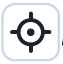
, via nettleserens vanlige spørsmål om tillatelse. Google Street View åpnes bare når du klikker på det i høyreklikkmenyen.gcctReport() hjelper).gcctCacheDebug() hva det sender.| Versjon | Endringer |
|---|---|
| 1.0 | Egne XYZ-flislag på kartet; Kartverket og andre ferdige kartlag. |
| 1.1 | Koordinatvisning (DMM/DD/DMS/UTM), gå til koordinater, måling, 161 m-sirkler, projisering, posisjon, fullskjerm. |
| 1.2 | Redigeringsvindu for kartlag: gjenkjenning av adresser, oversikt over WMS/WMTS-lag, forhåndsvisning, redigering/kopiering, import/eksport. |
| 1.3–1.4 | Kartlagene legges under cacheflisene; nettstedets lag fjernes aldri; støtte for Leaflet 0.7; pålitelige verktøyklikk; vinduer over sidepanelet; ingen skjemainnsending. |
| 1.5 | Søk etter steder, adresser og koordinater (Kartverket, OpenStreetMap). |
| 1.6–1.7 | Flere kartlag (OSM, CyclOSM, Esri Topo, Kartverkets turruter og eiendomsgrenser, terrengskygge, Waymarked, OpenSeaMap); tydeligere og mer lesbare vinduer. |
| 1.8 | Automatiske 161 m-sirkler rundt hver geocache. |
| 1.9 | Støtte for /play/map; diagnoserapport. |
| 1.10–1.13 | Strekikoner; én verktøylinje med alle kontroller; nettstedets knapper samlet uten duplikater; plassering uten kollisjoner. |
| 1.14 | Norsk (bokmål) grensesnitt. |
| 1.15 | Valgt kart på cachesidene. |
| 1.16 | UTM-sone 35; nøyaktig UTM-omregning (Krüger-rekker). |
| 1.17 | Demping bleker mot hvitt; geocaching.com-kartet skinner ikke lenger gjennom. |
| 1.18 | Søketreff i én samlet liste (steder, adresser, utland); steder i utlandet mens du skriver, via Photon. |
| 1.19 | Fjerne innebygde kart (og hente dem tilbake); hjemknapp; cachefliser fra ukjente adresser holdes alltid over kartet ditt; demping med fargefilter; sikrere gjenkjenning av nettstedets knapper og langt mindre leting; ingen rutenettlinjer mellom flisene. |
| 1.20 | Kartverket Sjøkart, CyclOSM og Waymarked-overleggene fjernet; én glidebryter per gruppe (demper det valgte bakgrunnskartet, høyst 50 %; synlighet for de valgte overleggene); høyreklikkboble med én koordinatlinje som åpnes i DMM; ingen skjøter mellom flisene ved skjermskalering; nettstedets egen posisjonsknapp på /play/map skjult. |
| 1.21 | Nytt, helhetlig utseende: samme farger, knapper og felt i panelet, dialogene, boblen og verktøylinjen; dialoger med tittellinje du kan dra i; projisering i egen dialog med forhåndsvisning, enheter og kopiknapp; bekreftelsesdialoger i stedet for nettleserens bokser; valgte kart markert og glidebryterverdier i prosent; Sjømerker (OpenSeaMap) fjernet. |
| 1.22 | De samme enkle svart-hvite strekikonene overalt – også i høyreklikkmenyen, kartlagpanelet, kopiknappene og dialogene – i stedet for emojier. |
| 1.23 | Høyreklikkboblen festes til en geocache like ved og viser GC-kode og navn (nøyaktig på /play/map, beregnet på /map); GC-koden åpner cachesiden; boblen er bred nok for alle koordinatformater, med bedre plass rundt kopi- og lukkeknappen. |
| 1.24 | Automatiske 161 m-sirkler bare rundt tradisjonelle cacher og cacher med løste koordinater (cachetyper og korrigerte koordinater fra geocaching.coms cachesøk); gcctCacheDebug() for feilsøking; MIT-lisens. |
| 1.25 | Også geocaching.coms egne kart kan fjernes fra listen. |
| 1.26 | Kartlagpanelet delt i tre faner: Geocaching, Bakgrunnskart og Overlegg. |
| 1.27 | Dra kartene opp og ned for å endre rekkefølgen; overleggene tegnes i listens rekkefølge. |
| 1.27.1–2 | Geocaching.coms eget kart skjules mens bakgrunnskartet ditt er valgt, også på /play/map – det skinner ikke lenger gjennom mens flisene lastes. |
| 1.28 | Klikkbart merke på den løste posisjonen til cacher du har funnet (ikonet er tilbake på de publiserte koordinatene); sirklene blir værende når du zoomer inn. |
| 1.29 | Nøyaktige publiserte koordinater fra cachesøket for festing av høyreklikkboblen og for sirklene på /map; runde blå merker. |
| 1.30 | 161 m-sirkler og merker for synlige fysiske steg og endelige plasseringer, lest fra cachesidene; gcctStageTest(). |
| 1.31 | Fysisk her (161 m) i høyreklikkmenyen; sirkler fra zoom 15. |
| 1.32 | Zoomnivået over koordinatene – skriv et tall for å zoome. 1.32.2: jevnere 161 m-sirkler; «fysiske steg» i stedet for «fysiske poster». 1.32.3: det lille kartet på cachesidene beholder nettstedets utsnitt. 1.32.4: Google Street View i høyreklikkmenyen. 1.33.0: knapp som skjuler alle geocacher. |
| 1.33 | Fysisk her (161 m) fjernet. Senere: overleggsglidebryter 50–100 %; nøyaktige høyreklikk- koordinater for alle cacher, også dine egne (lest fra cachesiden); «Endelig plassering» ved musepekeren over løste cacher; finaler uten koordinater vises ikke; gcctSnapTest(). |
| 1.34 | Knapp for merkene ved løste cacher uten sirkler; merker for steg bare sammen med sirklene. |
| 1.35–1.38 | Verktøylinjen til høyre, venstre, øverst eller nederst, i én eller to rekker, og kan dras til en annen kant; holder seg klar av nettstedets søkepanel; dialogen Innstillinger (verktøylinje, språk, nettstedets knapper); dialogene og kartlagpanelet åpnes ved siden av verktøylinjen; nettstedets zoomknapper er alltid skjult; ikonene i verktøylinjen i nettstedets grønnfarge; verktøylinjen sentreres langs kanten og holder seg klar av andre knapper; dialogene og kartlagpanelet holder seg klar av andre knapper og kan dras. |
| 1.39 | Favorittpoeng: ♥ og antallet i høyreklikkboblen og over cachene på kartet (fra zoom 15, bare cacher nettstedet viser, fra et minste antall du velger); zoom- og koordinatvisningen kan skjules; høyreklikk på /play/map åpner vår boble og fester seg til nettstedets WebGL- cacher. 1.39.14–25: filtrene i sidepanelet på /map (Mine funn, Mine gjemte, cachetyper) skjuler også sirkler, merker og favorittpoeng. |
| 1.40 | Knapp i verktøylinjen for favorittpoengene på kartet. |
| 1.41 | GC-koder i Finn et sted. 1.41.1–9: verktøylinjen holder seg sentrert ved siden av nettstedets sidepanel og bruker to rekker ved behov; avrundet høyre ende; blått hjerte i høyreklikkboblen. |
| 1.42 | D/T (vanskelighet/terreng) under cachene på kartet, med en knapp 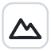 i verktøylinjen og en innstilling; knappene i dialogene er alltid synlige. |
| 1.43 | FTF-merke på cacher ingen har funnet ennå (Innstillinger). |
| 1.44 | Høyreklikk festes også til merkenålene dine, med Fjern merkenålen i boblen; lettere tall for favoritter og D/T. |
| 1.45 | Favorittpoeng og D/T ved merkene til løste cacher du har funnet; mindre merke; løste cacher huskes, så merket vises selv når de publiserte koordinatene er utenfor kartet. |
| 1.46 | Merker ved løste cacher fra zoom 10: blå prikker på 10–11, små merker på 12–13, fulle merker fra 14. |
| 1.47 | Merkenåler med navn, som huskes i fanen og kan eksporteres som GPX – én nål eller alle; nytt navn ved å klikke på navnet; nåler fra zoom 12. |
| 1.48–1.50 | Ruter: søkbar liste over geocacher og merkenåler (hele verden på GC-kode), valg i kartet, rekkefølge, forhåndsvisning og nedlasting som GPX-rute med Garmin-symboler; dialogene kan gjøres høyere/lavere ved å dra; kartlagpanelet åpnes ved siden av en sentrert verktøylinje. |
| 1.51 | Ruter: Tilbake til start (rundtur), og Fulle cachedata – geocachene i GPX-filen som fulle papirløse cacher i Groundspeaks format. |
| 1.51.1–1.51.9 | Rute: forhåndsvisning og stopp vises ved siden av vinduet; merkenåler som får nytt navn, får det i ruten også; vinduet så høyt som skjermen tillater; klokkeslett i navnet på GPX-filer (ruter og alle nåler); merkelappen Eiet; listen følger kartet. |
| 1.52–1.53 | Cacheliste (/map): geocachene på kartet, som følger kartet, med markering ved peking, zoom med glød og tilbake igjen, og en knapp for cachesiden. Cacheliste og rute øverst til høyre eller venstre (Innstillinger), unna sidepanelet; rutevinduet like smalt som listen; listen følger filtrene i sidepanelet og skjul-knappen; forhåndsvisningen av ruten holder seg unna alle knapper. |
| 1.54 | Innstilling for å starte med nettstedets sidepanel felt sammen – tegnet sammenfelt fra første øyeblikk, uten bevegelse; en verktøylinje til venstre står ved siden av fliken til det sammenfelte panelet og holder seg midtstilt. Senere: 161 m-sirkler også for dine egne cacher på /play/map; tilleggene følger nettstedets egne ikoner; cachesøket er begrenset så nettstedets eget søk ikke feiler; kartlagpanelet, søket og innstillingene åpnes der du la dem; typeikon på løste cacher (Innstillinger); smilefjes-merke ved løste cacher du har funnet; merkeknappen uavhengig av sirklene; grønn kant på Rute og cachelista mens de er åpne. |
| 1.55 | Et ryddigere brukergrensesnitt: verktøylinjen i grupper; Vis på kartet – ett panel for sirkler, merker, favorittpoeng, D/T, FTF og typeikoner, med zoomnivået hver vises fra; Innstillinger i deler; Hjelp; trykk og hold på berøringsskjermer for høyreklikkmenyen; måling festes til geocacher; Forrige utsnitt – opptil 10 steg tilbake; trådkors og kopieringsknapp i koordinatvisningen; UTM som sone, øst og nord (f.eks. 32V 597980 6643119), bare lokal sone; verktøylinjens plassering huskes for /map og /play/map hver for seg; på /play/map kan nettstedets ikon ved oppgitte koordinater skjules for løste cacher du har funnet; koordinatvisningen nederst til venstre på /play/map; verktøylinjen øverst eller nederst alltid sentrert; bytte mellom /map og /play/map beholder utsnittet og sidepanelet; hjemadressen i søkene; høydeprofil for ruter, med stigning og fall for hver etappe i forhåndsvisningen; «Glem ruten» lukker vinduet; fra zoom 15 trykkes Søk i dette området på /play/map for deg når du flytter kartet; går du hjem, merkes stedet med en pin som heter Hjemme, aldri adressen, og hjem står som en pin i rutevinduet. |
| 1.56 | Ruteberegning langs veger og stier – med bil, bil og sykkel, sykkel eller til fots, der bilen (eller sykkelen) settes igjen der vegen slutter; forslag til kortere rekkefølge; forhåndsvisning i kartet med parkeringsplasser, avspilling av ruten, og – når den er godtatt – etapper, total, høydeprofil og GPX-spor langs den. Rette strekninger går aldri over vann eller gjennom bebyggelse eller dyrket mark, og tegnes stiplet. Ingen rute til et stopp som bare kan nås over vann. Rute herfra i høyreklikkboblen. Navnet på en nål legger seg aldri over en cache. Tid per etappe i rutelista og samlet tid i forhåndsvisningen. Knapp i koordinatvisningen som åpner høyreklikkmenyen ved trådkorset. |
Hver karttjeneste har sine egne bruksvilkår; krediteringen for lagene som vises, står i kartets kildelinje. Geocaching og geocaching.com er varemerker som tilhører Groundspeak, Inc. Dette skriptet er et uavhengig tillegg og har ingen tilknytning til Groundspeak. Skriptet er utgitt under MIT-lisensen.